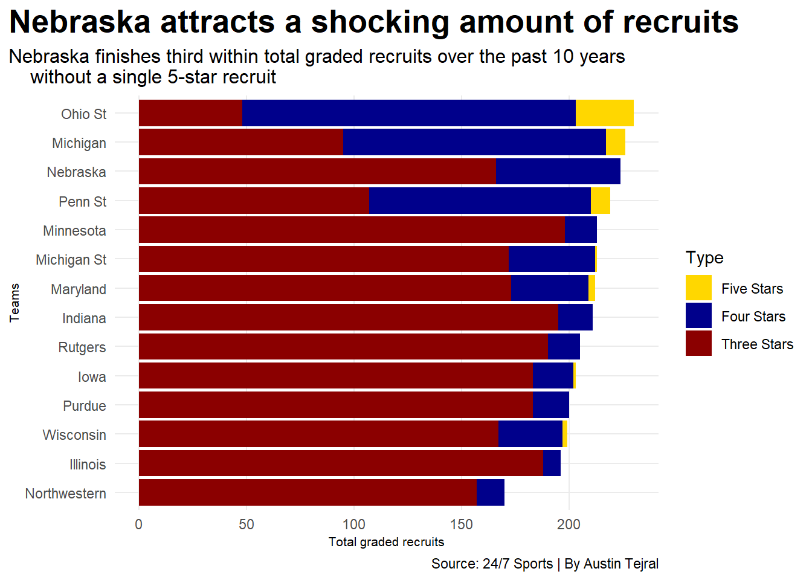
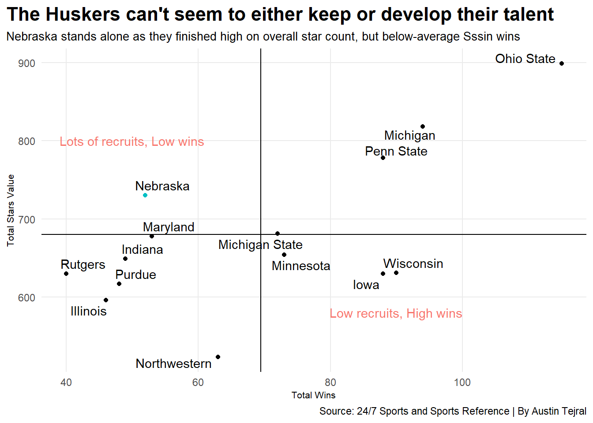

── Attaching core tidyverse packages ──────────────────────── tidyverse 2.0.0 ──
✔ dplyr 1.1.4 ✔ readr 2.1.5
✔ forcats 1.0.0 ✔ stringr 1.5.1
✔ ggplot2 3.4.4 ✔ tibble 3.2.1
✔ lubridate 1.9.3 ✔ tidyr 1.3.1
✔ purrr 1.0.2
── Conflicts ────────────────────────────────────────── tidyverse_conflicts() ──
✖ dplyr::filter() masks stats::filter()
✖ dplyr::lag() masks stats::lag()
ℹ Use the conflicted package (<http://conflicted.r-lib.org/>) to force all conflicts to become errors
library(ggplot2)library(ggrepel)library(ggbump)
standings <-read_csv("standings.csv")
Rows: 1298 Columns: 18
── Column specification ────────────────────────────────────────────────────────
Delimiter: ","
chr (3): School, Conf, Notes
dbl (15): Rk, Year, Wins, Losses, WinPct, ConfWins, ConfLosses, ConfWinPct, ...
ℹ Use `spec()` to retrieve the full column specification for this data.
ℹ Specify the column types or set `show_col_types = FALSE` to quiet this message.
recruits <-read_csv("RecruitingData.csv")
Rows: 140 Columns: 10
── Column specification ────────────────────────────────────────────────────────
Delimiter: ","
chr (1): Team
dbl (9): Year, TFSRank, TFSFiveStars, TFSFourStars, TFSThreeStars, ONTRank, ...
ℹ Use `spec()` to retrieve the full column specification for this data.
ℹ Specify the column types or set `show_col_types = FALSE` to quiet this message.
bigtenrank <-read_csv("rankingsbigten.csv")
Rows: 140 Columns: 10
── Column specification ────────────────────────────────────────────────────────
Delimiter: ","
chr (2): Team, Conference
dbl (8): Rank, Year, Wins, Losses, WinPct, ConfWins, ConfLosses, ConfWinPct
ℹ Use `spec()` to retrieve the full column specification for this data.
ℹ Specify the column types or set `show_col_types = FALSE` to quiet this message.
combined <-read_csv("combinedrecstan.csv")
Rows: 14 Columns: 4
── Column specification ────────────────────────────────────────────────────────
Delimiter: ","
chr (1): Team
dbl (3): TotalWins, TFSTotalStar, ONTTotalStar
ℹ Use `spec()` to retrieve the full column specification for this data.
ℹ Specify the column types or set `show_col_types = FALSE` to quiet this message.
bigstandings <- standings |>filter(Conf =="Big Ten (East)"| Conf =="Big Ten (West)")
ggplot() +geom_bar(data=tfstotals, aes(x=reorder(Team, Stars), weight=Stars, fill=Type)) +scale_fill_manual(values=c("gold", "darkblue", "darkred"),labels=c('Five Stars', 'Four Stars', 'Three Stars'))+labs(x="Teams",y="Total graded recruits",title="Nebraska attracts a shocking amount of recruits",subtitle="Nebraska finishes third within total graded recruits over the past 10 years without a single 5-star recruit",caption="Source: 24/7 Sports | By Austin Tejral" ) +theme_minimal() +theme(plot.title =element_text(size =20, face ="bold"),plot.subtitle =element_text(size =12),axis.title =element_text(size =8),panel.grid.minor =element_blank(),plot.title.position ="plot" ) +coord_flip()

ggplot() +geom_bar(data=onttotals, aes(x=reorder(Team, Stars), weight=Stars, fill=Type)) +scale_fill_manual(values=c("gold", "darkblue", "darkred"),labels=c('Five Stars', 'Four Stars', 'Three Stars'))+labs(x="Teams",y="Total graded recruits",title="Ohio State is dominant in recruiting",subtitle="Over the last 10 year they have recruited 27 five-star players, more than the rest of the Big Ten combined",caption="Source: ON3 | By Austin Tejral" ) +theme_minimal() +theme(plot.title =element_text(size =20, face ="bold"),plot.subtitle =element_text(size =12),axis.title =element_text(size =8),panel.grid.minor =element_blank(),plot.title.position ="plot" ) +coord_flip()
Warning: Returning more (or less) than 1 row per `summarise()` group was deprecated in
dplyr 1.1.0.
ℹ Please use `reframe()` instead.
ℹ When switching from `summarise()` to `reframe()`, remember that `reframe()`
always returns an ungrouped data frame and adjust accordingly.
`summarise()` has grouped output by 'Team'. You can override using the
`.groups` argument.
ggplot() +geom_point(data=combined, aes(x=TotalWins, y=TFSTotalStar)) +geom_point(data=nebcombined, aes(x=TotalWins, y=TFSTotalStar, colour="darkred")) +geom_text(aes(x=50, y=800, label="Lots of recruits, Low wins", colour="blue")) +geom_text(aes(x=90, y=580, label="Low recruits, High wins", colour="blue")) +geom_vline(xintercept =69.5) +geom_hline(yintercept =680) +geom_text_repel(data=combined,aes(x=TotalWins, y=TFSTotalStar, label=Team) ) +labs(x="Total Wins",y="Total Stars Value",title="The Huskers can't seem to either keep or develop their talent",subtitle="Nebraska stands alone as they finished high on overall star count, but below-average Sssin wins",caption="Source: 24/7 Sports and Sports Reference | By Austin Tejral" ) +theme_minimal() +theme(plot.title =element_text(size =16, face ="bold"),plot.subtitle =element_text(size =10),axis.title =element_text(size =8),panel.grid.minor =element_blank(),plot.title.position ="plot",legend.position ="none" )

ggplot() +geom_point(data=combined, aes(x=TotalWins, y=ONTTotalStar)) +labs(x="Teams",y="Total graded recruits",title="Ohio State is dominant in recruiting",subtitle="Over the last 10 year they have recruited 27 five-star players, more than the rest of the Big Ten combined",caption="Source: ON3 and Sports Reference | By Austin Tejral" ) +theme_minimal() +theme(plot.title =element_text(size =20, face ="bold"),plot.subtitle =element_text(size =12),axis.title =element_text(size =8),panel.grid.minor =element_blank(),plot.title.position ="plot" )